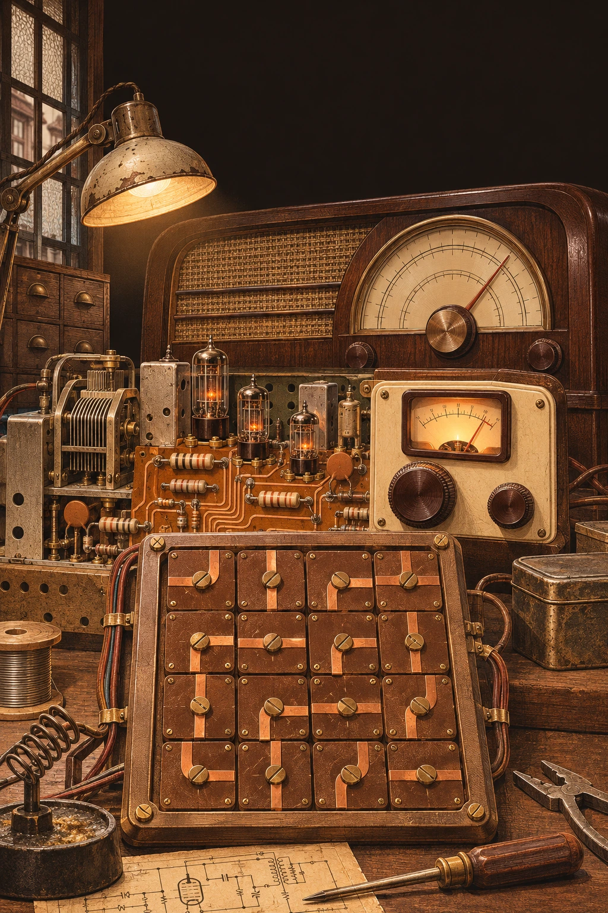

訊號修復計畫 ／ AM–66今日值班 · 2026.11.10
琥珀電台訊號接線員
雜訊之間，
讓每一道訊號找到回家的路。
點一下線路，順時針轉一格。
從標有「源」的電源出發，接通每一格，不留下斷線。
正在檢查封面…
無倒數 · 可悔步 · 卡住時有提示
旋轉接線盤4 × 4
點格子轉線路 · 源是電源 · 亮銅色代表已接通

訊號修復計畫 ／ AM–66今日值班 · 2026.11.10
雜訊之間，
讓每一道訊號找到回家的路。
點一下線路，順時針轉一格。
從標有「源」的電源出發，接通每一格，不留下斷線。
正在檢查封面…
無倒數 · 可悔步 · 卡住時有提示
點格子轉線路 · 源是電源 · 亮銅色代表已接通